1. Тёплая кухня
Мягкий и знакомый образ: тёплый фон, терракота и округлые карточки.
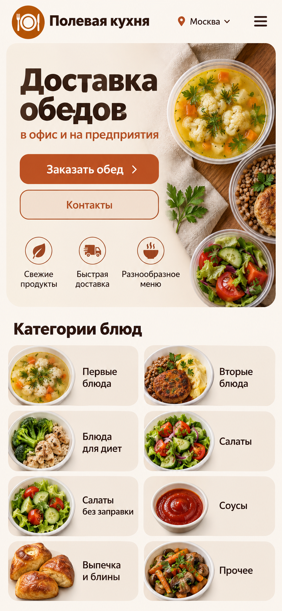
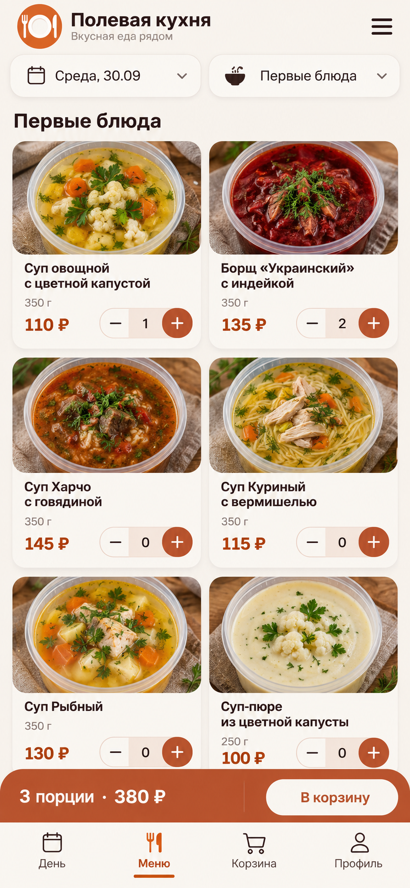
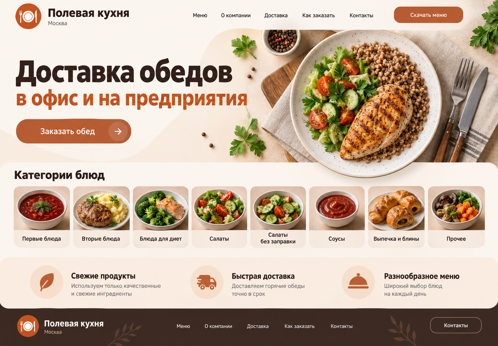
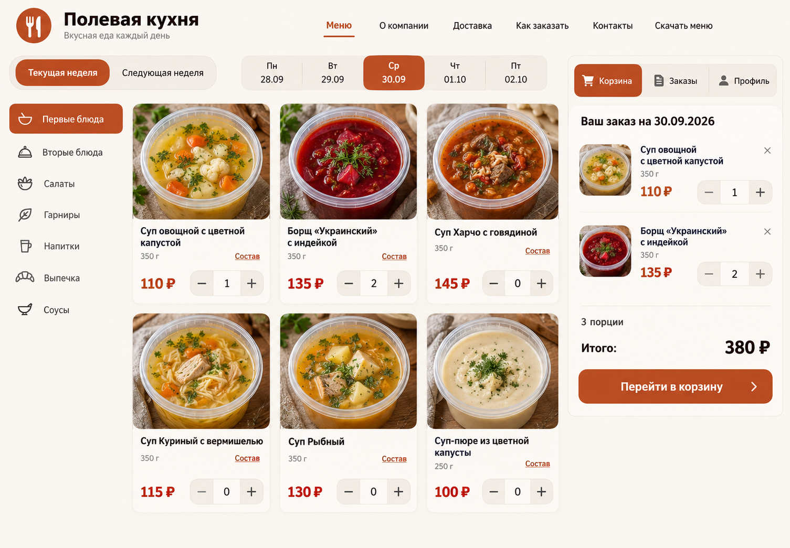
2. Свежий день
Свежий светлый образ: зелёные акценты и горизонтальные карточки блюд.
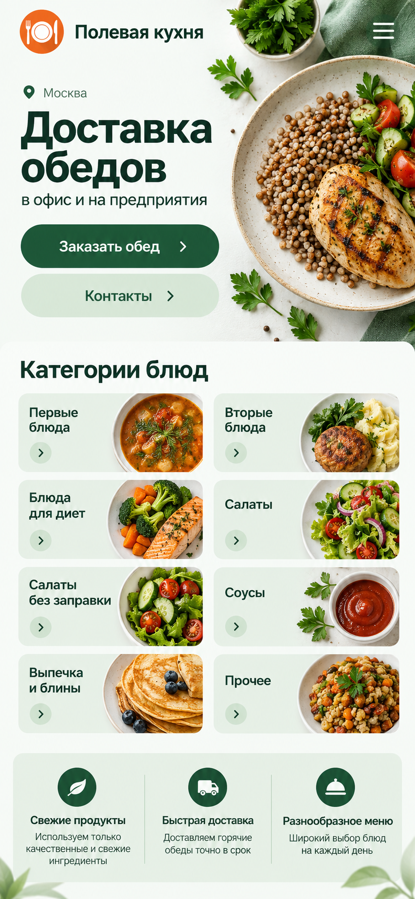
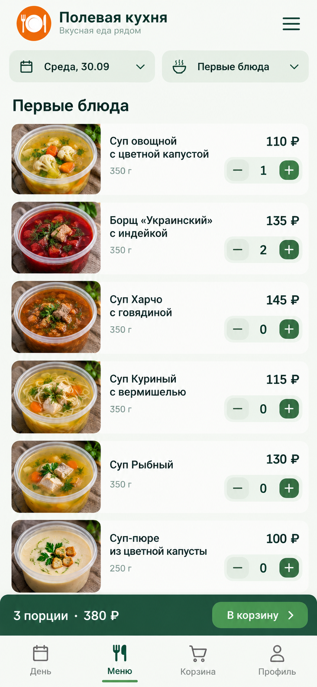
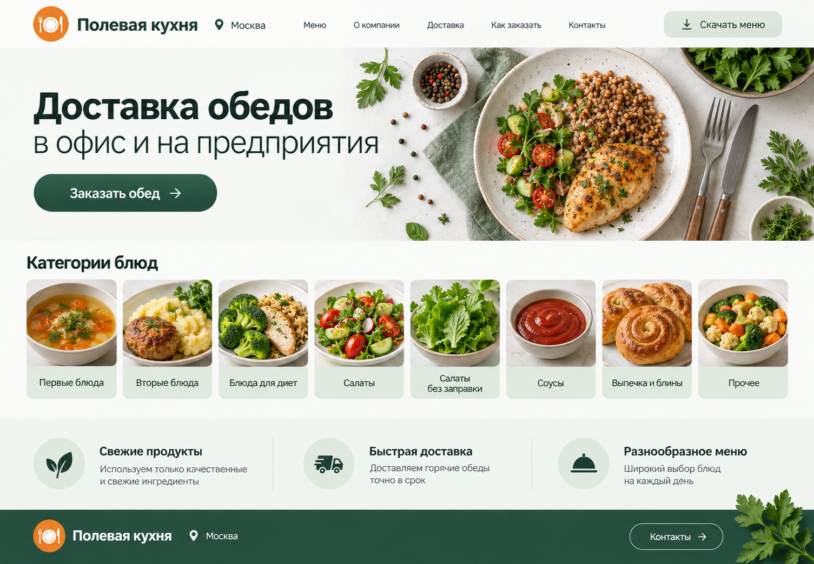
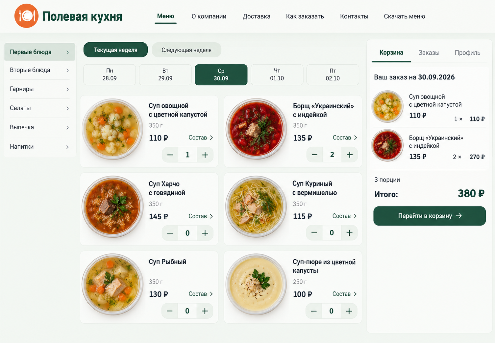
3. Городской обед
Практичный городской образ: белый фон, графит и яркие кнопки.
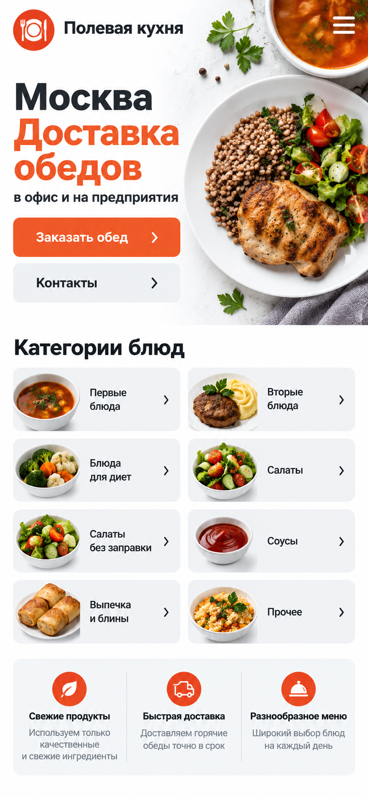
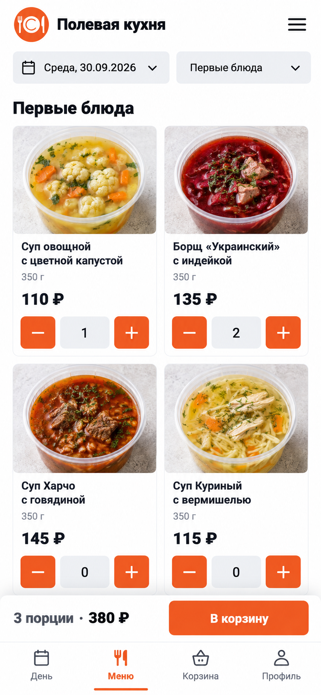
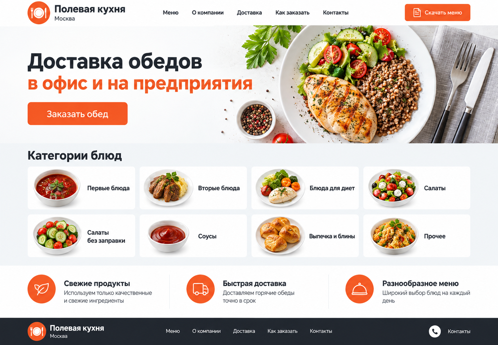
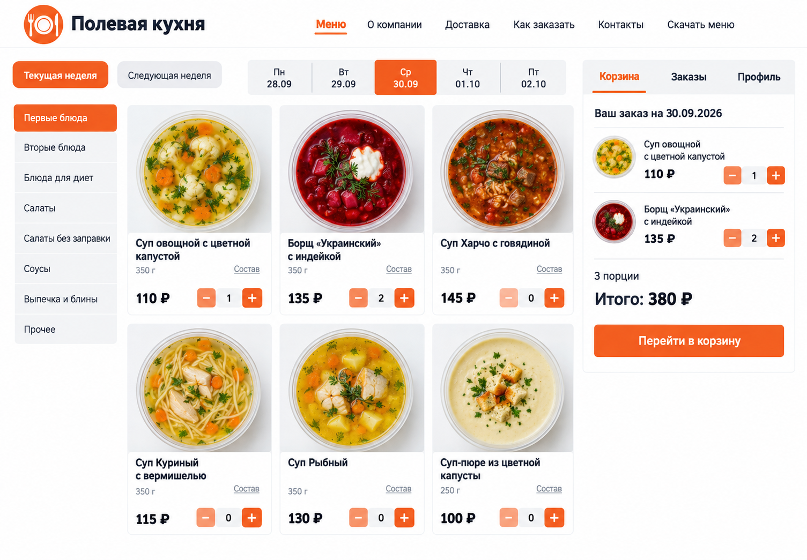
4. Современная столовая
Выразительная типографика печатного меню: сливочный фон и бордовые акценты.


5. Вечернее бистро
Тёмный контрастный образ: графит, янтарь и светлые поверхности фотографий.